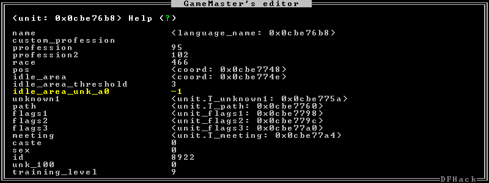

gui/gm-editor¶
This editor allows you to inspect or modify almost anything in DF. Press ? for in-game help.
Usage¶
gui/gm-editorOpen the editor on whatever is selected or viewed (e.g. unit/item description screen)
gui/gm-editor <lua expression>Evaluate a lua expression and opens the editor on its results.
gui/gm-editor dialogShow an in-game dialog to input the lua expression to evaluate. Works the same as the version above.
gui/gm-editor toggleHide (if shown) or show (if hidden) the editor at the same position you left it.
Examples¶
gui/gm-editorOpens the editor on the selected unit/item/job/workorder/etc.
gui/gm-editor df.global.world.items.allOpens the editor on the items list.
Screenshot¶
